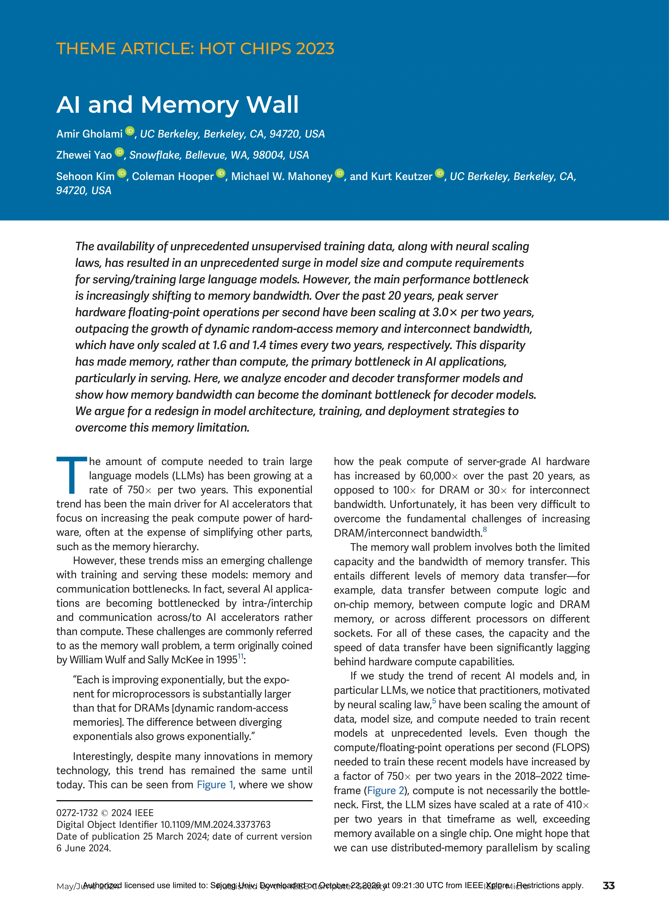

01 — PAPER REVIEWGHOLAMI ET AL.
AI and
Memory Wall.
계산은 빨라졌다.
데이터는 따라오지 못했다.
논문 원문의 그림과 문단 사이를 이동하며
AI의 병목이 어디에서 생기는지 읽어 봅니다.
THE PAPER, UP CLOSE.

ORIGINAL
FIGURES
100%
FIGURES
100%
A READING MAP
요약보다 먼저,
근거의 위치를 봅니다.
페이지를 선택하거나, 아래의 다음 버튼으로 순서대로 진행하세요.
원문 전체→그림·문단 확대→한글 해석→맥락으로 복귀
PRINTED PAGE
표시한 영역을 눌러 확대 ↗
휠로 확대 · 드래그로 이동
SOURCE & DISCUSSION
더 많은 FLOPs 다음에는,
더 나은 데이터 공급.
용량, 대역폭, 데이터 재사용.
모델과 하드웨어를 함께 생각할 이유입니다.
DISCUSSION우리 워크로드의 병목은
우리 워크로드의 병목은
계산일까, 데이터 이동일까?
PRIMARY SOURCE
AI and Memory Wall
Amir Gholami et al.
IEEE Micro, 44(3), pp. 33–39
May/June 2024
모든 그림·문단은 IEEE 출판본 원문을 사용했습니다. 성장률은 논문의 과거 관측치이며, Fig. 3의 결과는 해당 실험 조건에서 읽어야 합니다.